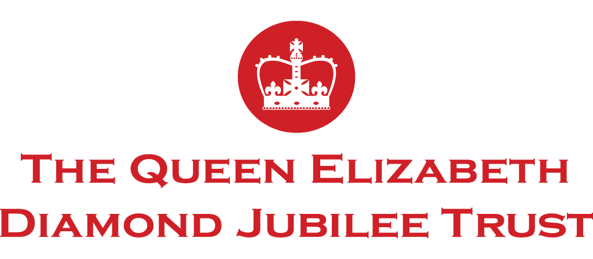

Trust Phiz Digital
The trust is committed to enriching the lives of people throughout the Commonwealth with a range of projects and initiatives.

Eliminating avoidable blindness and empowering the next generation by working with young Leaders are the main focus of the trust. To do this effectively it is paramount that they use social media effectively and our role is to help in this endeavour.
The work began with us conducting a social media audit, producing a strategy and delivering a best practice guide to help the trust achieve its business goals.
After completed this first phase of the project, we were then asked to help with the content planning for the Commonwealth Heads of Government Meeting 2018 and to produce a monthly social media audit thereafter.